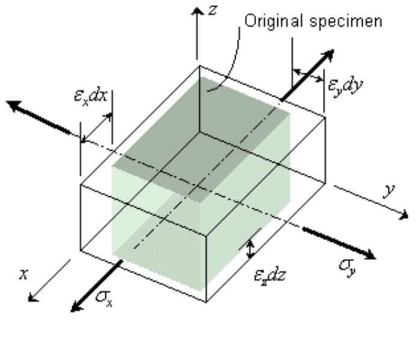
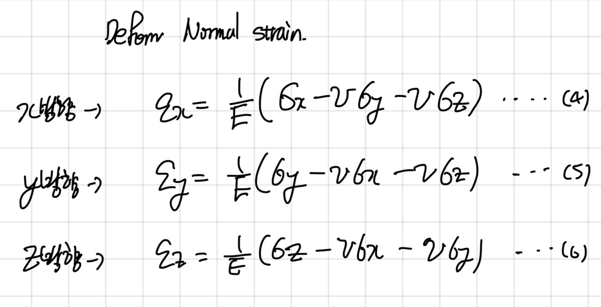
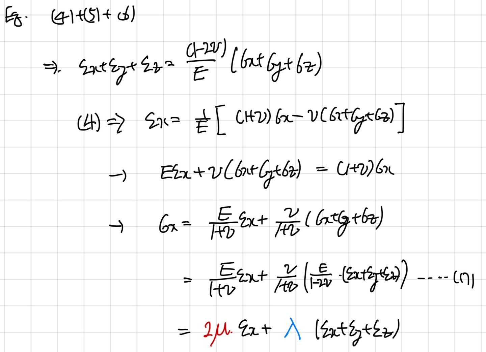
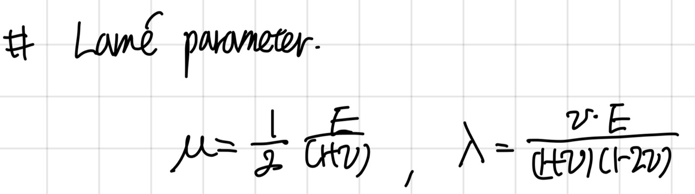

---
{
"layout": "note",
"title": "[Fluid mechanics] Stress tensor_Lame's Parameters",
"journal": true,
"section": "Study",
"topic": "Fluid Mechanics",
"excerpt": "[Fluid mechanics] Stress tensor_Lame's Parameters Stress: 압력처럼, 단위면적당 가해지는 힘 그리고 그에 따라서 변형되는 정도, 고체역학 시간에 접했을 것이다. 그렇다면 이 stress를 ",
"classes": "wide",
"permalink": "/blog/mechanical-engineering/fluid-mechanics/fluid-mechanics-stress-tensor-lames-parameters/",
"study_area": "Mechanical",
"date": "2024-05-13",
"source_url": "https://jeffdissel.tistory.com/m/78",
"header": {
"teaser": "/blog/mechanical-engineering/fluid-mechanics/fluid-mechanics-stress-tensor-lames-parameters/images/img-001.png"
}
}
---
{% raw %}[Fluid mechanics] Stress tensor_Lame's Parameters
Stress:
압력처럼, 단위면적당 가해지는 힘 그리고 그에 따라서
변형되는 정도, 고체역학 시간에 접했을 것이다.
그렇다면 이 stress를 3차원 좌표로 표현하는 방식인
stress tensor가 뭔지에 대해서 알아보자.
일단 시작은
Generalized Hook's law
이다.

Generalized hook's law의 핵심은 생각보다 간단하다.
우리가 x방향으로
σ_x를 위 그림처럼 가해준다고 가정해보자.
해당 stress는 x방향의 변형
뿐만아니라,
ε_y 와 ε_z 을 만들 것이다.
긴떡을 양쪽을 잡고, 길게 늘리면, 떡의 두께는 줄어들 것이다.
늘리는 방향과 수직인 부분에 strain(변형 길이) 가 생기는 것이다.
여기서 훅의 법칙으로, 두가지 물체 고유상수
E: Young's Modulus
v: Possion's Ration
로 각 방향으로 총 변형 strain을 유도 할 수 있다.
잡아당기는 방향은 Stress/E 만큼 늘어나고
그와 수직인 방향은 v * stress/E 만큼 줄어드므로,
최종적으로 다음과 같이 표현할 수 있다.

여기서, 위 식들을 전부더해준후,
σ_x 의 식으로 표현해보자.

여기서 Lame라는 사람은 2가지 Parameter를 다음과 같이 정의하였다.

위식의 의미하는 바 그리고 저 상수들의 의미를 생각해보자.
잘생각해보면, 결국 각방향의 서로 다른 Normal stress는 공통적을 3 방향에 모두 strain을 만든다.
그리고 공통적으로 그 서로 다른 stress가
ε_x + ε_y + ε_z 를 함축하고 있고,
그 상수를 Lambda라고 정의하였다.
그리고 독자적으로 stress와 같은 방향의 strain은 추가적인 stress가 가해지고,
그 상수를 u라고 정의한 것이다.
조금 말이 어렵지만 쉽게 생각하면, 3가지 다른 stress들에서
공통항( ε_x + ε_y + ε_z )을 추출 한 것이다.
이 Equation은 추후에 Stress tensor를 설명하는데 시작인 Eq이므로
다음 포스터에서
본론으로 들어가겠습니다.{% endraw %}